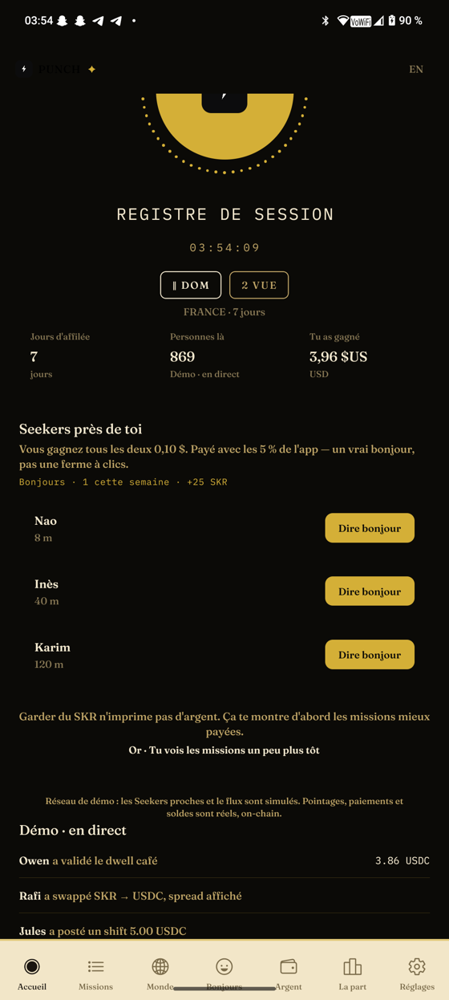
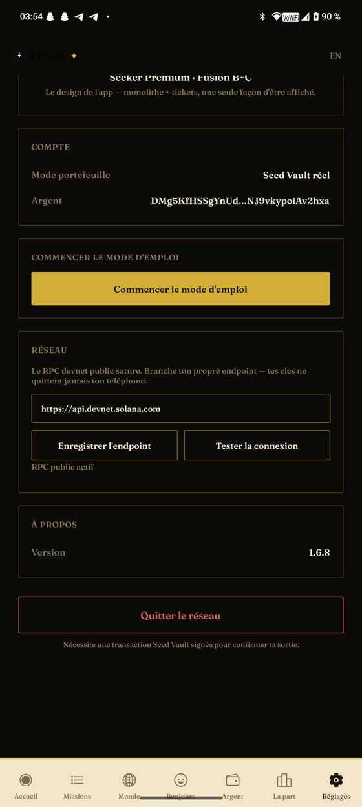

JUDGE GUIDE — 15 MINUTES — REAL DEVNET · GUIDE DU JURY — VRAI DEVNET
How to test PUNCH · step by step
Everything money-related in the app is a real signed devnet transaction. Nothing is simulated. — Tout ce qui touche à l'argent dans l'app est une vraie transaction devnet signée. Rien n'est simulé.
Install the APK on the Solana Seeker (or any Android with an MWA wallet on devnet). No account, no signup.
Open the app → “Ouvrir mon portefeuille”. The system Seed Vault sheet asks for a real authorization on devnet.
A welcome grant arrives from the treasury within seconds if your wallet is empty: 0.05 SOL + 5 USDC + 20 USDT + 5,000 SKR. Check your address on the explorer — it's a real transfer.
Tap the bolt (CLOCK IN). Seed Vault asks for your signature — a real memo transaction. The paper ticket shows time, country, the 92/3/5 rule and an on-chain stamp (clickable signature).
Try the money features — each one asks for a real signature: Wallet → Swap SKR⇄USDC · Stake/Unstake (honest 1.5% fee) · Board missions · Say hi to a nearby Seeker (0.10 USDC from the treasury).
Leave the network (Settings): a real signed transaction that honestly decrements the shared counters.
What to verify as a judge: every action triggers the Seed Vault prompt · the treasury address
FUiCbnDhEEJtz9Zcj66hGB54iGMGeyjRKD7CsTwpihJn
moves on explorer.solana.com (cluster=devnet)
· every receipt's signature is clickable · failures show the exact reason and change nothing.
In the box
Two identities, one composition
Gold Seeker Premium (default) and Seeker Nuit — Settings → Identité. Serif Fraunces, 2 px angles, LOCAL TIME clock.
Proof of work
Guided tour: Settings → “Commencer le mode d'emploi” (8 screens). Receipt history: Wallet → Historique des tickets (100 receipts, all signatures clickable). Test harness: node scripts/test-store-economy.mjs (54 offline checks of the 92/3/5 split and fees).
Social data honesty (v1.6.8)
The “People here” stat and the live feed are a simulated social network in demo mode — labeled “Demo · live”. Money actions are always real, on-chain.
What you'll see on the device

Home — local-time clock, CLOCK IN bolt, the people-here stat honestly labeled “Démo · en direct”, nearby Seekers.

Settings — one screen holds it all: Network section with the RPC test (“RPC public actif”), Version 1.6.8, and the signed “Quitter le réseau” exit.
Installe l'APK sur le Solana Seeker (ou tout Android avec un wallet MWA sur devnet). Sans compte, sans inscription.
Ouvre l'app → « Ouvrir mon portefeuille ». La feuille Seed Vault du système demande une vraie autorisation sur devnet.
Un lot de bienvenue arrive du trésor en quelques secondes si ton wallet est vide : 0,05 SOL + 5 USDC + 20 USDT + 5 000 SKR. Vérifie ton adresse sur l'explorer — c'est un vrai transfert.
Touche l'éclair (CLOCK IN). Seed Vault demande ta signature — une vraie transaction mémo. Le ticket papier montre l'heure, le pays, la règle 92/3/5 et un tampon on-chain (signature cliquable).
Teste les fonctionnalités d'argent — chacune demande une vraie signature : Argent → Échanger SKR⇄USDC · Garder/Relâcher le SKR (frais honnêtes de 1,5 %) · Missions du board · Dire bonjour à un Seeker proche (0,10 USDC du trésor).
Quitte le réseau (Réglages) : une vraie transaction signée qui décrémente honnêtement les compteurs partagés.
Ce qu'un juge doit vérifier : chaque action déclenche la feuille Seed Vault · l'adresse du trésor
FUiCbnDhEEJtz9Zcj66hGB54iGMGeyjRKD7CsTwpihJn
bouge sur explorer.solana.com (cluster=devnet)
· la signature de chaque reçu est cliquable · les échecs affichent la vraie raison et ne changent rien.
Visite guidée : Réglages → « Commencer le mode d'emploi » (8 écrans). Historique des reçus : Argent → Historique des tickets (100 reçus, signatures cliquables). Harnais de test : node scripts/test-store-economy.mjs (54 vérifications hors-ligne du split 92/3/5 et des frais).
Honnêteté des données sociales (v1.6.8)
La stat « Personnes là » et le flux live sont un réseau social simulé en démo — étiqueté « Démo · en direct ». Les actions d'argent restent toujours réelles, on-chain.
Ce que vous verrez sur l'appareil
Accueil — horloge heure locale, éclair CLOCK IN, la stat personnes là honnêtement étiquetée « Démo · en direct », Seekers proches.Réglages — un seul écran réunit tout : section Réseau avec test RPC (« RPC public actif »), Version 1.6.8 et la sortie signée « Quitter le réseau ».